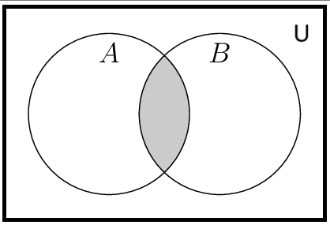
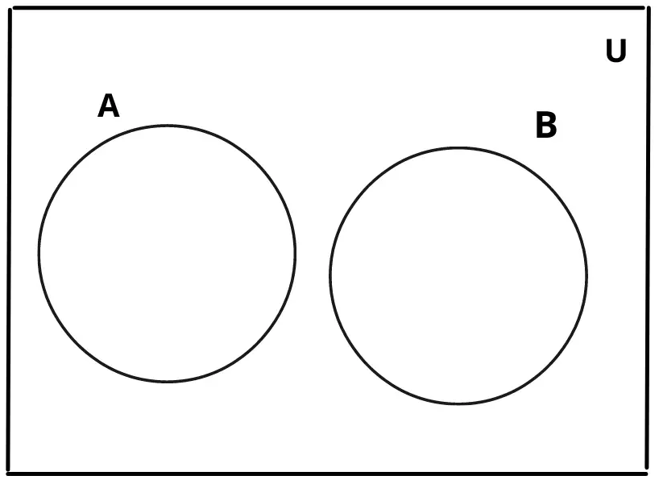
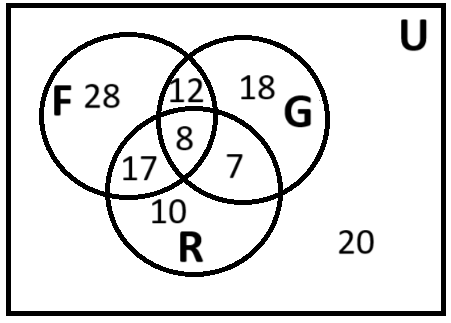
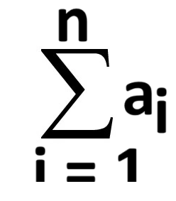
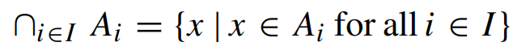
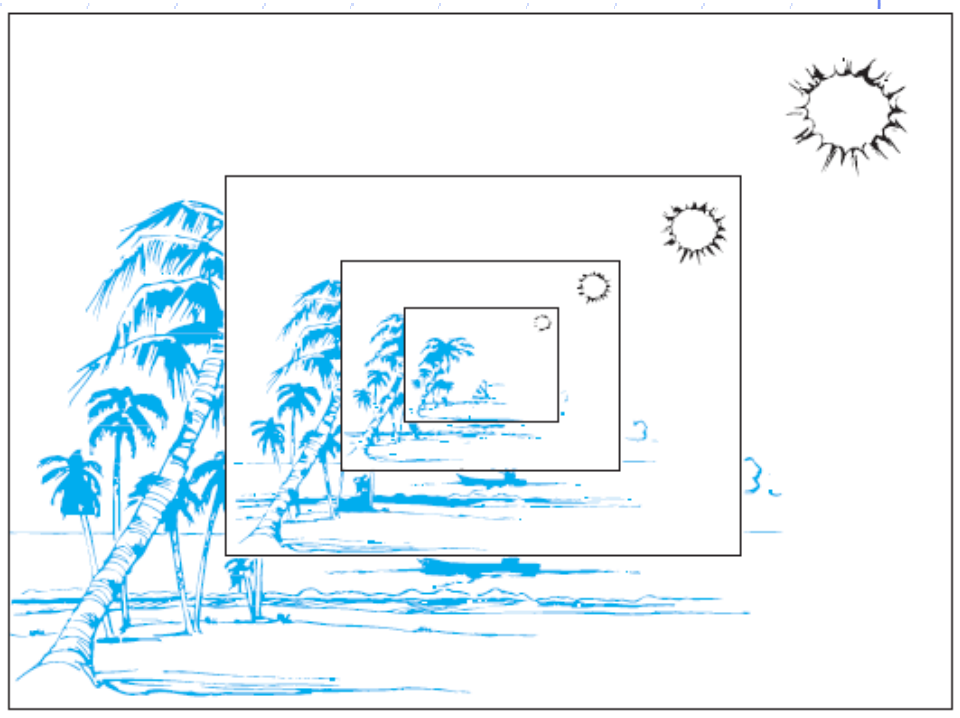
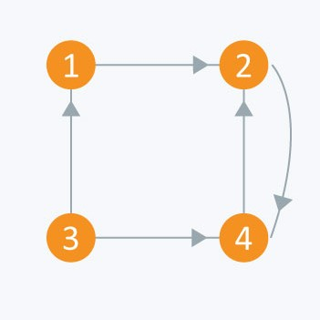

Discrete Mathematics
@Debuggers
Mathematics
Discrete Mathematics -
It is the part of mathematics devoted to the study of discrete (distinct or unconnected) object.
Here are some problem solved using discrete mathematics-
- How many ways are there to choose a valid password on a computer system.
- How can I identify spam email messages.
- How can I encrypt a message so that no unintended recipient can read it?
- How can it will prove that a sorting algorithm correctly sort a list.
- How many valid internet address are there.
Application of Discrete Mathematics -
It provides mathematical foundation for many computer science course including data structures, algoric,
database theory, autometa theory, formal language compiler theory, computer security and operating system.
Venn-Diagram
A Venn-Diagram is a pictorial representation of sets in which sets are represented by inclose areas in the plane.
The universal set U represented by the interior of a rectangle.
eg-

(A⊆B)

(A⋂B)

(A and B are disjoint)
Q. Let A and B be sets such that (A⋂B)⊆B and B∈A. Draw Venn-Diagram.
sol-
Q. Let A,B and C be sets such that (B⋂C)⊆A and A⊆(B⋂C). Draw Venn-Diagram.
sol-
 Q. Ac⋂U = ∅ . Draw Venn-Diagram.
Q. Ac⋂U = ∅ . Draw Venn-Diagram.
sol-
 Q. (A⋂B)c = Bc . Draw Venn-Diagram.
Q. (A⋂B)c = Bc . Draw Venn-Diagram.
sol-
 Q. Ac⋂B = Ac⋂C and A⋂B = A⋂C . Draw Venn-Diagram.
Q. Ac⋂B = Ac⋂C and A⋂B = A⋂C . Draw Venn-Diagram.
sol-
 cardinlity of set -
cardinlity of set -
Let, S be a set if there are exactly a distinct element in S where n is not negative integer then S is a
finite ser and n is the cardinlity of S denoted by
|S| = n
eq-
1. Let S be the set of english alphabet.
sol- |S| = 26
2.Let S be the empty set
sol- |∅| =0
Infinite set -
A set is said to be infinite, if it is not finite.
eq- set of positive integer.
Power set-
Given a set S, the power set of S is the set of all subset of the set S.
eg- let A={0,1,2}
⇒P(A) = {∅,{0},{1},{2},{0,1},{0,2},{1,2},{0,1,2}}
⇒P(A) = 2
n=2
3=8
Cartesian Product -
Let A and B be set, the Cartesian product of A and B denoted by AxB, if the set of all order pairs (a,b),
where a∈A and b∈B.
Hence, AxB = {(a,b)|a∈A ∧ b∈B}.
The ordered n-tuple (a
1,a
2,......a
n) is the ordered collection that has
a
1 as its first element, a
2 as its second element,.........a
n as its n
th
element.
(a
1,a
2,......a
n) = (b
1,b
2,......b
n)
if a
i = b
i for i = 1,2,3,.....n .
eg -
The Cartesian product of A = {1,2}, B = {a,b,c}
Then, AxB = {(1,a),(1,b,(1,c),(2,a),(2,b),(2,c))}
BxA = {(a,1),(a,2),(b,1),(b,2),(c,1),(c,2)}
Union of two set A and B -
Let, A and B be sets
∴ A⋃B = {x | x∈A ∨ x∈B}
Intersection of sets -
Let, A and B be sets
∴ A⋂B = {x | x∈A ∧ x∈B}
Difference of two sets -
Let, A and B be sets
∴ A-B = {x | x∈A ∧ x∉B}
Complement of sets -
Let, A and B be sets
∴ A
c = {x | x∉A}
Q. Convert Roster to set builder form.
A = {0,3,6,9,12}
sol- A = {x | x=3n, n=0,1,2,3,4}
Q. Convert set builder to Roster
A = {x | x is an integer such that x2=2}
sol- A = ∅
Set Identities -
- Identity law -
i. A⋃∅ = A
ii. A⋂U = A
- Dominartion law -
i. A⋃U = U
ii. A⋂∅ = ∅
- Idempotent law -
i. A⋃A = A
ii. A⋂A = A
- Double Complement law -
i. (Ac)c = A
- Commutative law -
i. A⋃B =B⋃A
ii. A⋂B = B⋂A
- Associative law -
i. A⋃(B⋃C) = (A⋃B)⋃C
ii. A⋂(B⋂C) = (A⋂B)⋂C
- Distributive law -
i. A⋃(B⋂C) = (A⋃B)⋂(A⋃B)
ii. A⋂(B⋃C) = (A⋂B)⋃(A⋂C)
- De-Morgans law-
i. (A⋃B)c = Ac⋂Bc
ii. (A⋂B)c = Ac⋃Bc
- Absorption law -
i. A⋃(A⋂B) = A
ii. A⋂(A⋃B) = A
- Complement law -
i. A⋃Ac = U
ii. A⋂Ac = ∅
Q. Use set builder notation and logical equivalent to establish the second De-Morgans law.
sol-
⇒ (A⋂B)
c = {x | x∉(A⋂B)}
⇒ (A⋂B)
c = {x | ¬(x∈(A⋂B))}
⇒ (A⋂B)
c = {x | ¬(x∈(A ∧ B))}
⇒ (A⋂B)
c = {x | ¬(x∈A ∧ x∈B) }
⇒ (A⋂B)
c = {x | ¬(x∈A) ∨ ¬(x∈B)}
⇒ (A⋂B)
c = {x | x∉A ∨ x∉B}
⇒ (A⋂B)
c = {x | x∈A
c ∨ x∈B
c)}
⇒ (A⋂B)
c = {x | x∈(A
c ⋃B
c )}
⇒ ∴ (A⋂B)
c = A
c⋃B
c
Q. Use set builder notation and logical equivalent to establish the first De-Morgans law.
sol-
⇒ (A⋃B)
c = {x | x∉(A⋃B)}
⇒ (A⋃B)
c = {x | ¬(x∈(A⋃B))}
⇒ (A⋃B)
c = {x | ¬(x∈(A ∨ B))}
⇒ (A⋃B)
c = {x | ¬(x∈A ∨ x∈B) }
⇒ (A⋃B)
c = {x | ¬(x∈A) ∧ ¬(x∈B)}
⇒ (A⋃B)
c = {x | x∉A ∧ x∉B}
⇒ (A⋃B)
c = {x | x∈A
c ∧ x∈B
c)}
⇒ (A⋃B)
c = {x | x∈(A
c ⋂B
c )}
⇒ ∴ (A⋃B)
c = A
c⋂B
c
Q. Let A,B and C be sets. Show that (A⋃(B⋂C))c
= ((C)c⋃(B)c)⋂(A)c
sol-
⇒ (A⋃(B⋂C))
c = (A)
c⋂(B⋂C)
c [by De-morgans law]
⇒ (A⋃(B⋂C))
c = (B⋂C)
c⋂(A)
c [by Commutative law]
⇒ (A⋃(B⋂C))
c = ((B)
c⋃(C)
c)⋂(A)
c [by De-morgans law]
⇒ (A⋃(B⋂C))
c = ((C)
c⋃(B)
c)⋂(A)
c [by Commutative law]
The Inclusion-Exclusion principles -
Let, A and B be any finite sets.
Then, n(A⋃B) = n(A) + n(B) - n(A⋂B)
also, n(A⋃B⋃C) = n(A) + n(B) + n(C) - n(A⋂B) - n(A⋂C) - n(B⋂C) + n(A⋂B⋂C)
Eg-
Find the number of student at a college taking alteast one of the languages French, German and Russian given the following data. Total number of
student taking is 120. 65 study French, 45 study German, 42 study Russian, 20 study French and German, 25 study French and Russian, 15 study German and Russian,
8 study all three language. Draw Venn-Diagram using result.
sol-
Given, n(F) = 65
n(G) = 45
n(R) = 42
n(F⋂G) = 20
n(F⋂R) = 25
n(G⋂G) = 15
n(F⋂G⋂R) = 8
∴ n(A⋃B⋃C) = n(A) + n(B) + n(C) - n(A⋂B) - n(A⋂C) - n(B⋂C) + n(A⋂B⋂C)
n(A⋃B⋃C) = 65 + 45 + 42 - 20 - 25 - 15 + 8
n(A⋃B⋃C) = 100
Venn-Diagram -

Computer representation of a sets -
Eg-
Let U = {1,2,3,4,5,6,7,8,9,10} and the ordering of element of U has the element in increasing order, that is ai = i.
What bit strings represent the subset of all odd interger in U, the subset of all even integers in U and the subset of intergers
not exceding 5 in U?
sol -
U = {1,2,3,4,5,6,7,8,9,10}
O = set of odd interger = {1,3,5,7,9}
bit string of O = 1010101010
E = set of even integer = {2,4,6,8,10}
bit string of E = 0101010101
A = Set of integer not exceding 5 in U
A = {1,2,3,4,5}
bit string of A = 1111100000
bit string of Oc = bit string of E = 0101010101
bit string of {1,2,3,4,5} ∨ {1,3,5,7,9} = A⋃O = {1,2,3,4,5,7,9}
bit string = 1111101010
bit string of {1,2,3,4,5} ∧ {1,3,5,7,9} = A⋂O = {1,3,5}
bit string = 1010100000
Function -
Function is a special type of relation from a set A to set B such that every element of A has a
unique image in set B.
In symbol we denote function from A to B as
f : A→B
The set A is called the domain.
The set B is called the co-domain.
if a∈A and b∈B such that f(a)=b. Then, B is called the image of A.
The set of all image values is called the range of f (function)
Composite function -
Consider a function f : A→B and g : B→C, i.e. where the co-domain
of f is co-domain of g. Then, a new function f : A→C called the composition
of f and g written as gof.
(gof) (a) = g (f (a))
One to one (1-1) function -
A function f:A→B is said to be one to one (1-1 / injective) if different
element in the domain A have distinct images.
For proving a function is one to one we have to show
if f (a) = f '(a)
⇒ a=a
Onto function -
A function f : A→B is said to be an onto function (surjective) if each
element of B (co-domain) is the image of some element of A i.e. f : A→B
is onto if the image of f is the entire co-domain (f (A) = B).
Invertible function -
A function f : A→B is invertible if its inverse relation f
-1
ia a function f : B→A. For being a invertible function f must be one to one and onto.
NOTE -
A one to one and onto function is also known as one to one correspondence
A one to one correspondence is also called bijective function
Q. Determine wheteher the function f(x)=x2 from the set of intger to the set
of integers is one to one and onto.
Sol-
Given, f ; Z→Z (Z= set of integer)
such that, f(x) = x
2
Let 1,-1∈ Z (domain)
Here, f(1) = 1
2 = 1
and f(-1) = (-1)
2 = 1
since, 1∈Z
∴ f(1) = f(-1)
but 1 ≠ -1
So, f is not one to one
for onto -1 ∈ Z (co-domain)
there exist Q ∈ Z (domain)
f(a) = -1
∴ f is onto
Q. Determine whether the function f(x) = x+1 from the set of real no. to itself is one to one and
onto.
Sol-
Given, f ; R→R
such that, f(x) = x+1
for one to one,
let f(x) = f(y) [f(x),f(y)∈R(co-domain)]
⇒ x+1 = y+1 [using defination]
⇒ x = y [x,y∈R(domain)]
∴ f is one to one.
for showing f is onto,
let, y = f(x) ∈ R(co-domain)
⇒ y = x+1 [x∈R(domain)]
⇒ x = y-1
Since, for every y ∈ R(co-domain)
there exist a y-1 = x ∈ R(domain)
∴ f is onto.
This shows that f is bijective.
Q. Why is f not a function from R to R if
f(a) = 1/x
f(x) = √x
Sol -
a) Since, f(0) = 1/0(not define)
∴ 0 doesnot have any image under this defination
∴ f is not a function
b) Since, f(-1) = √-1 (complex no.)
∴ √-1 does not have an image under this defination
∴ f is not a function
Geometric of characterization of one to one and onto function -
- If a function f : A→B is to one to one means that there are no two distinct pairs (a1,b)
and (a2,b) in the graph of f. Hence, each horizontal line can intersect the graph of f in
at most one point.
- If a function f : A→B is an onto function then for every b∈B there must be atleast
one a∈A such that (a,b) belongs to graph of f. Hence, each horizontal line must intersect the
graph of f atleast once.
Relation -
Let A and B be sets. A binary relation or simply relation from A to B is a subset of AxB
- (a,b)∈R ⇒ aRb (a is related to b)
- (a,b)∉R ⇒ a b
- A2 ⇒; AxA ⇒ARA
Inverse Relation -
Let R be any relation from A to a set B. The inverse of R, denoted by
R-1 and
defined as
R-1 = {(b,a):(a,b)∈R}
Eg- a = {1,2,3}
b = {x,y,z}
R = {(1,y),(1,z),(3,y)}
Here, aRb ⇒ 1Ry, 1Rz,3Ry
R
-1 = {(y,1),(z,1),(y,3)}
Type of relation -
- Reflexive relation -
A relation R on a set A is Reflexive if aRa for every a∈A, i.e. if (a,a)∈R for every
a∈A.
Eg- Consider A = {1,2,3,4}
R1 = {(1,1),(1,2),(2,3),(1,3),(4,4)}
R2 = {(1,1),(1,2),(2,1),(2,2),(3,3),(4,4)}
R3 = {(1,3),(2,1)}
R4 = ∅, the empty relation
R5 = A x A, the universal set
Sol:
Given, A={1,2,3,4}
R1 = {(1,1),(1,2),(2,3),(1,3),(4,4)}
Since, (2,2) ∉ R1
∴ R1 is not a reflexive relation
R2 is reflexive because each element (1, 2, 3, and 4) is paired with itself, satisfying the
reflexive property.
Given, A={1,2,3,4}
R3 = {(1,3),(2,1)}
Since, (2,2) ∉ R3
∴ R3 is not a reflexive relation
Given, A={1,2,3,4}
R4 = ∅, the empty relation
Since, no element is in R4. So,it doesnot satisfying the reflexive property.
∴ R4 is not a reflexive relation
R5 is reflexive because universal set have each element (1, 2, 3, and 4) is paired with itself, satisfying the
reflexive property.
- Symmetric relation -
A relation R on a set A is Symmetric if whenever aRb then bRa, this is if whenever (a,b)∈R then
(b,a)∈R.
Eg- Consider A = {1,2,3,4}
R1 = {(1,1),(1,2),(2,3),(1,3),(4,4)}
R2 = {(1,1),(1,2),(2,1),(2,2),(3,3),(4,4)}
R3 = {(1,3),(2,1)}
R4 = ∅, the empty relation
R5 = A x A, the universal set
Sol:
R1 is not symmetric because (1,2)∈R1 but (2,1) ∉R1
R2 is symmetric because (1,2)∈R1 and (2,1) ∈R1
R3 is not symmetric because (1,3)∈R1 but (3,1) ∉R1
R4 is symmetric because empty set has no elements, so it vacuously satisfies this condition.
R5 is symmetric because universal set is the set of all possible ordered pairs of elements from A, so it
contains both (a,b) and (b,a) for any a and b in A.
- Transitive relation -
A relation R on a set A is transitive if whenever aRb and bRc then, aRc this is whenever (a,b),(b,c)∈R
then (a,c)∈R.
Eg- Consider A = {1,2,3,4}
R1 = {(1,1),(1,2),(2,3),(1,3),(4,4)}
R2 = {(1,1),(1,2),(2,1),(2,2),(3,3),(4,4)}
R3 = {(1,3),(2,1)}
R4 = ∅, the empty relation
R5 = A x A, the universal set
Sol -
R1 is transitive because (1,2) and (2,3)∈R1 and also (1,3)∈R1
R2 is transitive because (1,2) and (2,1)∈R1 and also (1,1)∈R1
R3 is not transitive because (2,1) and (1,3)∈R1 but (2,3)∉R3
R4 is transitive because empty set has no elements, so it vacuously satisfies this condition.
R5 is transitive because universal set is the set of all possible ordered pairs of elements from A, so it
contains (a,b) and (b,c) and also (a,c).
- Equivalence relation -
Consider a non-empty set S. A relation R on S is an equivalence relation if R is reflexive, symmetric and
transitive i.e.
- for every a∈S, aRa
- If aRb, then bRc
- If aRb and bRc, then aRc
Eg-
Consider the set L of lines and the set T of triangle in the eudiden plane. The relation is parallel to or
identical to is an equivalence relation on L, and congurance and Similarity are equivalence relation on T.
Sol -
Let, R = {those triangles which are congurence to each other}
(i) Since every triangle is congruent itself
∴ R is reflexive.
(ii) If triangle A is congruent (or similar) to triangle B, then triangle B is congruent (or similar) to triangle A.
∴ R is symmetric.
(iii) If triangle A is congruent (or similar) to triangle B, and triangle B is congruent (or similar) to triangle C,
then triangle A is congruent (or similar) to triangle C.
∴ R is transitive
Hence, R is equivalence relation
Clasification of animals by species, i.e. the relation is of the same species as each an equivalence
relation on the set of animals
Sol -
Let R be the set of animals by species
(i) Every animal is of the same species as itself.
∴ R is reflexive.
(ii) If animal A is of the same species as animal B, then animal B is of the same species as animal A.
∴ R is symmetric.
(iii) If animal A is of the same species as animal B, and animal B is of the same species as animal C,
then animal A is of the same species as animal C.
∴ R is transitive.
Hence R is an equivalence relation.
A = {x | x is odd positive integer}
Let, R be relation as A such that R ={(a,b) | a,b ∈ A and a-b = odd positive integer}
Sol-
since, a ∈ A and a is odd positive integer
we know that,
⇒ odd - odd = even
⇒ a - a = 0
⇒ a is not related to a
∴ R is not reflexive
since, aRb ⇒ a-b = odd positive integer
⇒ b - a = odd negative integer
so, R is not symmetric
As, aRb and bRc
⇒ a - b = odd positive integer and b - c = odd positive integer
Taking (a - b) + (b - c) = odd + odd
⇒ a - b + b - c = even
⇒ a - c = even
so, a is not related to c
∴ R is not transitive
Q. A = {1,2,3,4,5}
let R be relation of such that R = {(x,y) | x+y = 5}
Show that whether R is reflexive, symmetric and transitive.
Sol-
According to question,
R = {(1,4),(4,1),(2,3)(3,2)}
Since, (1,1) ∉ R
∴ R is not reflexive
Again, (1,4) and (4,1) ∈ R
also, (2,3) and(3,2) ∈ R
∴ R is symmetric
Again, (1,4) and (4,1) ∈ R but (1,1) ∉ R
∴ R is not transitive.
Irreflexive relation -
A relation R on a set is Irreflexive if (a,a) ∉ R for every a ∈ A.
Eg -
Let A = {1, 2, 3} and R = {(1, 2), (2, 2), (3, 1), (1, 3)}. Is the relation R reflexive or irreflexive?
Sol- The relation R is not reflexive as for every a ∈ A, (a, a) ∉ R, i.e., (1, 1) and (3, 3) ∉ R. The relation R is
not irreflexive as (a, a) ∉ R, for some a ∈ A, i.e., (2, 2) ∈ R.
Anti-Symmetric and Asymmetric relation-
Antisymmetric Relation is a relation R of a set A is antisymmetric if (a,b) ∈ R and (b,a) ∈ R, then a=b.
Q. Which of these are antisymmetric?
(i) R = {(1,1),(1,2),(2,1),(2,2),(3,4),(4,1),(4,4)}
(ii) R = {(1,1),(1,3),(3,1)}
(iii) R = {(1,1),(1,2),(1,4),(2,1),(2,2),(3,3),(4,1),(4,4)}
Sol-
(i) R is not antisymmetric here because of (1,2) ∈ R and (2,1) ∈ R, but 1 ≠ 2.
(ii) R is not antisymmetric here because of (1,3) ∈ R and (3,1) ∈ R, but 1 ≠ 3.
(iii) R is not antisymmetric here because of (1,2) ∈ R and (2,1) ∈ R, but 1 ≠ 2 and also (1,4) ∈ R and (4,1) ∈ R but 1 ≠ 4.
Relation R on a set A is asymmetric if(a,b)∈R but (b,a)∉ R
Floor and Ceiling function-
Let, x be any real number. Then x lies between two integers called the floor and ceiling of x.
⌊ x ⌋ called the floor of x (denotes the greatest integer that does not exceed x)
⌈ x ⌉ called the ceiling of x (denotes the least integer that is not less than x)
Eg- ⌊ 3.14 ⌋ = 3
⌊ -8.5 ⌋ = -9
⌊ √5 ⌋ = 2
⌈ 3.14 ⌉ = 4
⌈ -8.5 ⌉ = -8
⌈ √5 ⌉ = 3
Integer and Absolute value function-
Let, x be any real number. The integer value of x, written as INT(x), Convert x into an integer by deleting(truncating)
the fractional part of the number.
Eg- INT(3.14) = 3
INT(-8.5) = -8
NOTE -
- INT(x) = ⌊ x ⌋ {when x is positive}
- INT(x) = ⌈ x ⌉ {when x is negative}
The Absolute value of the real number x written as, ABS(x) or |x| is defined as,
|x| = 0, if x = 0
|x| = x, if x > 0
|x| = -x, if x < 0
Remainder function, Modular arithmatics-
Let x be any integer and let m be a positive integer. Then, k(mod m) will denote the integer remainder when
k is divided by m.
k = mq + r {when 0 ⩽ r ⩽m}
eg -
- 25(mod 7) = 4
- 25(mod 5) = 0
- 3(mod 8) = 3
- -26(mod 7) = 2
(if k is negative divided | k | by m to obtain a remainder r'
then, k(mod m) = m - r' where r ≠ 0)
- -371(mod 8) = 5
Hash function -
A hash function is function f : k → A where k is a set of keys and A is set of physical addresses.
A hash function takes a data item (or key of record) to be stored or to be retrieved and compute the first choice
for storage location.
One of the most popular hash function is modulas (mod)
f(n) = n mod m
The hash function should efficiently dispersed all the probable addresses : f(x) should be different from f(y)
for most of the pairs x ≠ y likely to be used simultaneously.
Exponential function -
It is defined as f(x) = a
x for all real number such that a
x = lim a
r, where r is
a rational number.
Logarithmic function -
The logarithmic of any positive number x to be the base b written as log
bx given the function y = log
bx
and b
y = x
Three classes of logarithm are-
- Logarithm to base 10 called common logarithm
eg - log10x & log x
- Logarithm to base e called natural logarithm
eg - logex ∼ ln x
- Logarithm to base 2 called binary logarithm
eg - log2x
Relation between exponential and logarithm function -
The basic relationship between exponential and logarithm function is
f(x) = bx and g(x) = logbx
is that they are inverse of each other.
 Principle of mathematical induction-
Principle of mathematical induction-
To prove that P(n) is true for all positive integer n, where P(n) is a propositional function, we complete two
step:
- Basic step-
We verify that P(1) is true i.e. result is true for n=1.
- Inductive step-
Showing that the conditional statement P(k) → P(k+1) is true for all positive integer k i.e.,
the result will be true for n = k+1 i.e. P(k+1).
Q. Show that if n is a positive integer, then 1+2+3+......+n = {n(n+1)}/2
Sol-
Let P(n) = 1+2+3+.......+n = {n(n+1)}/2 ------eq1
when n = 1, from LHS of eq1
⇒ P(1) = 1
And from RHS of eq1
⇒ P(1) = {1(1+1)}/2 = 1
since, LHS = RHS for n = 1
∴ Result is true for n = 1
Let us assume that the result is true for n = k
1+2+3..........+k = {k(k+1)}/2 = P(k) -------eq2
claim: Result is also true for n = k + 1 i.e.
p(k+1) = 1+2+3......+(k+1) = {(k+1) + (k+2)}/2
Taking,
p(k+1) = 1+2+3......+(k+1)
p(k+1) = 1+2+3......+k+(k+1)
p(k+1) = p(k)+(k+1)
p(k+1) = {k(k+1)}/2 + (k+1)
p(k+1) = {k(k+1) + 2(k+1)}/2
p(k+1) = {(k+1) + (k+2)}/2
∴ Result is also true for n = k+1 using induction hypothesis result is also true for n=n
i.e. P(n) = 1+2+3+.........+n = {n(n+1)}/2
Q. Use mathematical induction to show that 1+2+22.....+2n = 2n+1-1 for all non-negative integer.
Sol-
Let P(n) = 1+2+2
2.....+2
n = 2
n+1-1
for n = 0, form LHS
P(0) = 1
and form RHS
P(0) = 2
0 + 1 - 1 = 1
since LHS = RHS
∴ Result is true for n = 0
Assuming result is true for n = k, i.e.
p(k) = 1+2+2
2.....+2
k = 2
k+1-1 ------eq1
Claim: P(k+1) = 1+2+2
2.....+2
k+2
k+1 = 2
k+2-1
i.e. result is true for n = k+1
considering,
P(k+1) = 1+2+2
2.....+2
k+2
k+1
P(k+1) = 2
k+1-1 + 2
k+1 {using eq1}
P(k+1) = 2.2
k+1 - 1
P(k+1) = 2
k+2 - 1
∴ Result is also true for n = k+1
By induction hypothen result is for n
i.e. 1+2+.....+2
n = 2
n+1
Q. Using mathematical induction to prove the inequality n < 2n for all positive integer n .
Sol-
Let P(n) = n < 2
n
for n = 1,
1 < 2
1
i.e. 1 < 2
i.e. result is true for n=1
Assuming result is true for n = k, i.e.
p(k) = k < 2
k -------eq1
Claim: result is also true for n = k+1
i.e. P(k+1) = k+1 < 2k+1
considering,
P(k+1) = k+1
P(k+1) < 2
k+ 1 {using eq1}
P(k+1) ⩽ 2
k + 2
k {1⩽2
k for all non-negative k}
P(k+1) = k+1 < 2
k + 2
k
P(k+1) = k+1 < 2
k(1+1)
P(k+1) = k+1 < 2
k .2
1
P(k+1) = k+1 < 2
k+1
∴ Result is also true for n = k+1
By induction hypothen result is for n
i.e. n < 2
n
Q. Using mathematical induction to prove that n3 - n is divisible by 3 whenever n is a positive integer .
Sol-
Let P(n) = n
3 - n is divisible by 3
Taking, n=1
P(1) = 1 - 1
P(1) = 0 is also divisible by 3
∴ Result is true for n = 1
Assuming result is true for n = k,
i.e. P(k) = k
3 - k is divisible by 3
Claim : P(k+1) = (k+1)
3 - (k+1) is divisible by 3
Taking,
P(k+1) = (k+1)
3 - (k+1)
P(k+1) = (k+1)[(k+1)
2 - 1]
P(k+1) = (k+1)k(k+2)
P(k+1) = (k
2+k)(k+2)
P(k+1) = k
3 + 3k
2 +2k
P(k+1) = k
3 -k + k + 3k
2 +2k
P(k+1) = k
3 -k + 3k
2 +3k
P(k+1) = k
3 -k + 3(k
2 +k)
Since, k
3 - k is divisible by 3 and 3(k
2 +k) is also divisible by 3
∴ P(k+1) is divisible by 3
∴ Result is true for n = k+1
Using induction hypothen, result is true for n
i.e. n
3 - n is divisible by 3
Sequence -
A Sequence is a f:N →A. Here, N = {1,2,3.......} set of natural no. and A be any set. The sequence
is usually denoted by a
1,a
2,a
3....... or { a
n : n ∈ N} or simply
{a
n}.
Note -
Sometimes the domain of sequence is W (set of whole no.) in place of N.
A finite sequence over a set A is function from {1,2,......m} into A and usually denoted to a
1,a
2,..........
a
m such a finite sequence is called a list or an m - tuple.
Eg-
- The sequence
1,1/2,1/3,1/4,......
i.e., an = 1/n, where n =1,2,3.....
-
The sequence
1,1/2,1/4,1/8,......
i.e., bn = 2-n, where n =0,1,2,3.....
-
The sequence
1,-1,1,-1,......
i.e., an = (1)n+1, where n =1,2,3.....
or, bn = (-1)n, where n =0,1,2,3.....
Summation symbol, sums-
The summation symbol ∑ (sigma)
Consider the sequence,
a
1,a
2,a
3.......
Then, the sums
a
1,a
2,......a
n = 
Here, i is called dummy index or dummy variable.
Indexed classes of sets -
Let, I be any non empty set and let, S be the collection of sets. And indexing function is
f:I → S for any i ∈ I, we denote the image f(i) by A
i.
The set I is called the indexing set, and elements of I are called Indices. If f is one to one
and onto we say that S is index by I.
The concept of union and intersection define for index classes of sets by


Recursive -
Sometime it is difficult to define an object explicitly. However, it may be easy to define this object in term
of itself. The process is called recursion. For instance the picture shown here is produced recursively first
and original picture is given then the process of successively superimposing centred smaller picture on top
of the previous picture is carried out.

Recursive defination consist of three steps -
- Basic step -
Specify the primitive elements (at least one).
- Recursive step -
Rules for generating new element from existing elements.
- Terminal step -
Gurantees that the first two steps, basis and recursive clause, are the only ways
the element can be obtained.
Recursive defined set -
Sets can be defined recursively. Recursive definition of sets have two parts, a basis step and a recursive sep (omitting the terminal step).
Eg -The recursive definition to define a set A is as:
(i) 3 ∈ A
(ii) if xe A then x +3 ∈ A
∴ A ={3,6,9,12,15,...}
Q. Let B be the set defined recursively as follows.
(a) 2 ∈ B
(b) if n ∈ B then n2 ∈ B
Describe the set by listing method.
sol-
B={2,4,16,256,65536,...}
Define following sets recursively.
1. L={0,00,10,100,110,0000,1010,...}
sol-
(i) 0 ∈ l
(ii) If x ∈ L then 1x ∈ L and xx ∈ L
2. L= {b, bb, bbb, bbbb, ...}
sol-
(i) b ∈ L
(ii) If x ∈ L then bx ∈ L
3. L={a, aaa, aaaaa, aaaaaaa, ...}
sol-
(i) a ∈ L
(ii) If x ∈ L then axa ∈ L.
Recursive defined function -
Let x ∈ A and B = {x,x+1,x+2,...} The recursive definition of a function with domain B consists of three steps:
for k ≥ 1
(1) Basis step -
A few initial values of the function f(x),f(x+1),...,f(x+k-1) are specified. An equation that specifies such initial values is called an initial condition.
(ii) Recursive step -
A formula to compute f(n) from the k preceding functional values f(n-1),f(n-2),....,f(n-k) is made. Such a formula is called recursive formula or recurrence relation
(iii)Terminal steps can be omited -
let us consider factorial function. The factorial function is defined by f(n)=n! where f(0)=1.
f is recursively defined as
(i) f(0)=1 (initial value)
(ii) f(n)=n*f(n-1), n≥1 (recurrence relation)
Eg-
Fibonacci Numbers
The number 1, 1, 2, 3, 5, 8,..... are Fibonacci numbers. They have a Fibonacci number, except the first two, is the sum of two immediately preceding Fibonacci numbers.
The recursive definition of n
th Fibonacci number as:
(a)f
1 = f
2 = 1 (initial condition)
(b) f
n = f
n-1 + f
n-2,n≥3 (recurrence relation)
Eg -
Tower of Hanoi-
It is also called
problem of Benares Temple or Tower of Brahma
Let H
n denote the number of moves needed to solve puzzle with n disks.
Let us define H
n recursively. Clearly H
1=1. Let n ≥ 2. Consider top (n-1) disks. We can move top (n-1) disks, following the rules to middle peg using H
n-1 moves using third peg as an auxiliary. That leaves the largest disk at first peg. It takes one move to transfer it to third peg. Now, the n-1 disks at middle peg can be moved to third peg using peg as auxiliary peg in H
n-1 moves. Hence total number of moves H
n can be recursively defined as
Hn = 1, if n=1
Hn = 2Hn-1 + 1, otherwise
NOTE-
The minimum number of moves required to solve a tower of hanoi puzzle is 2
n -1 where n is a number of disk.
Recursive relation -
A recurrence relation for the sequence {a
n} is an equation that expresses a
n, in terms of one or more preceding terms of the sequence, viz, a
0,a
1,...,a
n-1, for n≥ n
0, Here n
0 is used to define initial condition and is a nonnegative integer. A sequence is called as a solution of a recurrence relation if its terms satisfy the recurrence relation
Application -
Recurrence relations are used to model variety of problems. Few problems are inherently recursive, viz, Towers of Hanoi, divide and conquer algorithms, computing compound interest etc. Let us consider following example of computing compound interest.
Eg-
Hemant deposits Rupees 10,000 in a saving account at bank. The annual interest rate of bank is 9%. Define recursive formula (recurrence relation) to compute the amount An. Hemant will have in his account at the end of nth years.
Sol-
Let A
n denote the amount after n
th year. Clearly A
0 = initial amount. Hence
A
0 = 10,000 Rupees.
A
n = (Compound amount at the end of (n-1)
th year )+(interest earned during n
th year)
A
n = A
n-1 + (A
n-1) x (0.09)
A
n = (1.09) x A
n-1
Hence the recurrence relation to compute amount n
th year is
An-1 = 1.09 An-1
Solving Recurrence Relation -
A numeric function can be described by a recurrence relation together with an appropriate set of boundary conditions. Such a numeric function is called as solution of the recurrence relation. Solution of recurrence relation is a sequence satisfying recurrence relation.
- Substitution Method -
Simple class of recurrence relations can be solved by substitution method. The substitution method is also called as iterative method which is used for finding formula for recurrence relation. Solving the recurrence relation by iteration means finding an explicit formula for f(n). This is done in two steps:
- the recurrence formula iteratively and look for a pattern to predict an explicit formula using initial conditions.
- Use induction to prove the predicted formula.
Eg-Let us consider the following recurrence relation:
an = an-1 + 3, n≥2 and an = 2 for n = 1.
Applying it for an-1 we get
an = (an-2+3) + 3
an = an-2+ (3 x 2)
Applying it for an-2 we get
an = (an-3+3)+2(3)
an = (an-3)+3(3)
Applying recurrence for an-3 we get
an = (an-4)+4(3)
After i iterations we will get
an = (an-i)+i(3)
As we know that the term an-i will become a1 after (n-1) such substitutions, that is, for i=n-1.
Hence
an = a1 + (n-1)(3)
a1 = 2,
an = 2+(n-1)(3) is solution of given recurrence relation.
Eg-
There are in guests at a sesquicentennial hall. Each person shakes hand with everybody else exactly once. Define the number of handshakes that occur recursively.
Let Hn denote the number of handshakes that occur. Clearly, H1=0,so let n≥2 Let us consider one of the guests, Saurabh. By definition, the number of handshakes made by the remaining (n-1) guests among themselves kn-1 Now guest, Saurabh shakes hands with n-1 guests, yielding n-1 additional handshakes. Hence,
Hn = Hn-1 + (n-1), n≥2 and H1=0
Sol-
Solving this recurrence relation by substitution method.
H
n = H
n-1+(n-1)
Using iterative substitutions we get,
H
n = H
n-2 + (n-2)+(n-1)
H
n = H
n-3 + (n-3)+(n-2)+(n-1)
after i substitution we get,
H
n=H
n-i + (n-i)+(n-i-1)+...+(n-3)+(n-2)+(n-1).
when i=n-1 we get,
H
n = H
1+1+2+3+...+(n-2)+(n-1)
H
n = 0+1+2+3+...+(n-2)+(n-1)
H
n = {n(n-1)}/2
let us prove this by induction.
Let us show that
H
n = {n(n-1)}/2 ,where n≥1
Basis step: n=1
H
1 = 1(0)/2 = 0
which agrees with initial condition. Hence formula is true for n=1.
Induction step: Let us assume that the formula is true for n=k,
i.e. H
k = {k(k-1)}/{2} , for any k≥1
Then by recurrence for
H
k+1 = H
k + k
let us substitute
H
k = k(k-1)/2
we get,
H
k+1 = {k(k-1)/2} + k
H
k+1 = {k(k-1)+2k}/2
H
k+1 = {k
2-k+2k}/2
H
k+1 = {k
2+k}/2
H
k+1 = {k(k+1)}/2
Hence,result is also true for n=k+1.
Thus by mathematical induction, the result is true for n.
i.e. H
n = n(n-1)/2
Q. Solve the recurrence relation
Tn=(n/2) for n≥2
T(n)=1 for n= 1
Also n is in the power of 2.
Sol-
Let us solve the recurrence relation using substitution method
T
n = (n/2)
T
n = T(n/2 x 2) = T(n/2
2)
T
n=(n/2
3)
After i
th substitution,
T(n) = T(n/2
i)
When i = k, we get 2
k = n and T(n/n) = T(1)=1 by initial conditions.
Hence if 2
k = n, after k
th substitutions T(n) reduces to T(1).
Hence k=log
2n and the solution of recurrence is
T(n)=log
2n
Growth of Functions -
Given functions f and g, we wish to show how to quantify the statement:
“g grows as fast as f”.
The growth of functions is directly related to the complexity of algorithms. We
are guided by the following principles.
• We only care about the behavior for “large” problems.
• We may ignore implementation details such as loop counter incrementation.
The growth of function is often described using special notation such as big-O, big-Omega, and big-Theta.
Big-O Notation -
Let f and g be functions from the set of integers or the set of real numbers to the set of real
numbers. We say that f (x) is O(g(x)) if there are constants C and k such that
|f (x)| ≤ C|g(x)|
whenever x>k.
The constants C and k in the definition of big-O notation are called witnesses to the
relationship f (x) is O(g(x)).
Application-
One of the advantages of using big-O notation is that we can estimate the growth of a function without worrying
about constant multipliers or smaller order terms. This means that using big-O notation we do not have to worry about the hardware and software used to implement an algorithm.
Futhermore, using big-O notation we can assume that the differnt operation used in an algorithm take the same time which simplifies the analysis considerably. Big-O notation is used extensively to estimate the number of operation and algorithm uses as its input growth.
Eg-
Show that f(x) = x2 + 2x + 1 is O(x2).
Sol
Here, f(x) = x
2 + 2x + 1 & g(x) = x
2.
when, x > 1
x < x
2 & 1 < x
2
0 ≤ (x
2 + 2x + 1) ≤ (x
2 + 2x
2 + x
2) ≤ 4x2
(x
2 + 2x + 1) ≤ 4x2 {whenever x > 1}
here, C = 4 and k = 1

f(x) = x
2 + 2x + 1 is O(x
2)
if we take x > 2, we have x
2 ≥ 2x & x
2 ≥1
x
2 + x
2 + x
2 ≥ x
2 + 2x +1 ≥ 0
3x
2 ≥ x
2 + 2x +1 ≥ 0
It follows that c=3 & k=2 are also
NOTE-
- Observe that in the relationship f(x) is O(x2), x2 can be replace by any function with larger value than x2
eg-
- f(x) is O(x3)
- f(x) is O(x2 + x + 7)
-
It is also true that x2 is O(x2 + 2x + 1)
∴ x2 + 2x + 1 > x2, whenever x > 1
eg-
show that 7x2 is O(x3)
Sol-
Here,f(x) = 7x2 & g(x) = x3
when x > 7,
7x2 < x3<,brbr>
then c = 1 & k = 7 as witnesses
when, x > 1
Q.Show that n2 is not O(n).
Solution:
To show that n
2 is n ot O(n), we must show that no pair of witnesses C and k exist
such that n
2 ≤ Cn whenever n>k. For this when n > 0 we can divide both sides of the inequality n
2 ≤ Cn by n we get
n ≤ C. However, no matter what C and k are, the inequality n ≤ C cannot hold for
all n with n>k. In particular, once we set a value of k, we see that when n is larger than the
maximum of k and C, it is not true that n ≤ C even though n>k.
Graph Theory
A graph is a pair of sets (V,E) where V is the set of vertices & E is the set of edges, formed by pair of vertices.
 NOTE-
NOTE-
- E is the multiset i.e. the element can occurs more than once so that every element has a multiplicity.
-
The two edges (v,u) and (u,v) are the same i.e. the pair is not ordered
Trivial Graph-
The (1,0) graph is called trivial graph.
Directed Graph-
A graph in which each edge of the graph G has a directed is called directed graph.

NOTE-
Suppose e=(a,b) is a directed edge in a graph then,
- a is called the initial vertex of e and b is the terminal vertex of e.
- e is said to be incident from a and to be incident to b.
- a is adjacent to b, and b is adjacent from a
Undirected Graph-
A graph in which each edge of graph g as no direction is called undirected graph.
 Basic of Graph Theory-
Basic of Graph Theory-
- Loop-
As edge of a graph that joint a node to itself is called loop/self-loop i.e. a loop is an edge (Vi,Vj) where Vi = Vj
- Multi-Graph-
In a multigraph no loop are allowed but more than one edge can join two vertices, these edges are called multiple edges or parallel edges and graph is called multi-graph.
- Pseudo Graph-
A graph in which loops and multiple edges are allowed is called a pseudo graph.
- Simple graph
A graph which has neither loop nor multiple edges is called a simple graph.
- Finite & Infinite Graph-
A graph with finite number of vertices as well as a finite number of edges is called a finite graph.
otherwise it is an infinite graph.
- Degree (Valency) of vertex -
The number of edges incident on a vertex Vi with self-loop counted twice is called the degree of vertex Vi and is denoted by degG(Vi) / deg(Vi) / d(Vi)
- In & Out Degree-
In directed graph 'G', the out-degree of vertex Vi of G, denoted by degG+ (Vi) is the number of edges beginning at Vi and the in-degree of Vi is denoted by degG-(Vi) is the number of edges ending at Vi
The sum of the in-degree and out-degree of the vertex is called the total degree of vertex.
A vertex with zero in-degree is called a source and vertex with zero out-degree is called sink.
- Isolated vertex-
A vertex have no incident edge is called an Isolated vertex. Isolated vertex are those with zero degree.
- Pendent or End vertex-
A vertex of degree one is called a Pendent vertex or an end vertex.
The Handshaking Theorem-
If G = (V,E) be an undirected graph with 'e' edges.
then,  i.e. the sum of the degree of the vertices is even.
i.e. the sum of the degree of the vertices is even.
Proof-
Since, the degree of vertex if the number of edges incident with that vertex the sum of the degree counts the total number of times and edge is incident with a vertex.
Since, every edge is incident with exactly two vertex, each edge gets counted twice once at each end.
Thus, sum of degree equal twice the number of edges.
NOTE-
- The theorem applies even if multiple edges and loops are present.
- In a simple graph with P vertices
P(P-1)/2
Eg-
Calculate the possible maximum number of edges of 4 vertex.
sol-
p = 4
p = {4(4-1)}/2 = 6
- So, that the maximum degree of any vertex in a simple graph with P vertex is (P-1)
Previous Year Paper